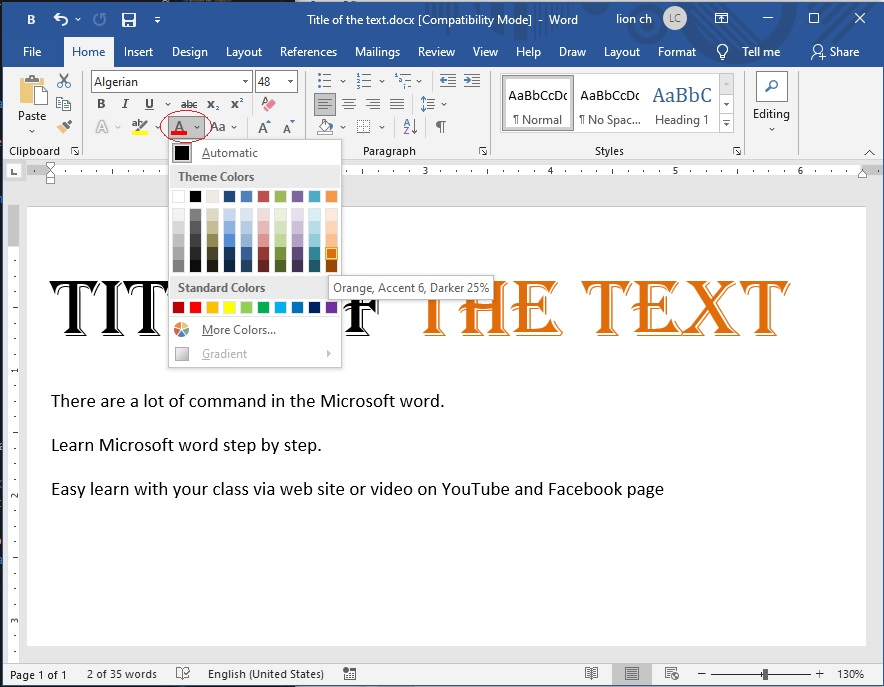

មេរៀនទី-៦
សេចក្តីណែនាំ (Introduction)
Formatted text សម្រាប់អោយអ្នកអាន សម្គាល់បាន រាល់ចំនុចជាក់លាក់ណាមួយ ក៏ដូចជា កំណត់ចំនុចសំខាន់ៗ ដែលមាននៅលើឯកសារ, នៅលើ word មានមុខងារមួយចំនួន ដែលអាចធ្វើការផ្លាស់ផ្តូរតួអក្សរបាន ទាំំងនោះមានដូចជា Font, size, and color. យើងក៏អាចប្រើ alignment ដើម្បីធ្វើការតម្រឹមអត្ថបទ នៅលើក្រដាសយើងបានផងដែរ
វិធីផ្លាស់ផ្តូរ ទំហំអក្សរ (Change the font size)
➊ select ទៅលើពាក្យ ឬឃ្លា ណាមួយដែងចង់កែប្រែ
➋ លើ Home Tap, ចុចលើ Font Size drop-down arrow.
ជ្រើសយកទំហំ font size តាមដែលចង់បាន, ក្នុងលក្ខខណ្ឌ ទំហំ Font មិនមានបង្ហាញ, យើងអាចលើប្រអប់ font-size
រួចវាយទំហំយកតែម្តង បន្ទាប់ចុច Enter.

➌ ទំហំអក្សរបានផ្លាស់ផ្តូរ លើអត្ថបទ ដូចខាងក្រោមនេះ
⛧ យើងក៏អាចប្រើ ឧបករណ៏ Grow Font and Shrink Font
ដើម្បីពង្រីកឬ បង្រួម ទំហំអក្សរបានផងដែរ។
វិធីផ្លាស់ផ្តូរ ប្រភេទអក្សរ (change font-style)
ជាទូទៅ ប្រភេទអក្សរបានកំណត់លើ កម្មវិធី word មុនដំបូង មានដូចជា
Cilibri. However, បន្ថែមពីលើនេះ Word បានផ្តល់ជម្រើសក្នុងការផ្លាស់ផ្តូរ ប្រភេទ Font ជាច្រើនទៀត សម្រាប់យើង
➊ select ទៅលើពាក្យ ឬឃ្លា ណាមួយដែងចង់កែប្រែ
➋ លើ Home Tap, ចុចលើ Font Style drop-down arrow.
ជាប់និងប្រអប់ font, ប្រភេទ font ជាច្រើននឹងបង្ហាញចេញ (ធ្វើការជ្រើយកប្រភេទណាមួយយកមកប្រើ)
➌
អក្សរនឹងផ្លាស់ផ្តូរ ដូចខាងក្រោមនេះ
⛧ ក្នុងលក្ខខណ្ឌ ឯកសារមានផ្ទុក អត្ថបទច្រើន ដើម្បីអោយវាមានរបៀបរៀបរយ ងាយស្រួលអាន ចាំបាច់យើងត្រូវជ្រើរើស យក ប្រភេទ font ដែលងាយស្រួលមើល ដែលទាំងនោះមានដូចជា Calibri, Cambria, & Times New Roman and Arail.
វិធីផ្លាស់ផ្តូរ ពណ៌អក្សរ (change font-color)
➊ select ទៅលើពាក្យ ឬឃ្លា ណាមួយដែងចង់កែប្រែ
➋ លើ Home Tap, ចុចលើ Font Color drop-down arrow.
ផ្ទាំង ជ្រើសពណ៌នឹងបង្ហាញដូចខាងក្រោម៖

➌
ជ្រើសយកពណ៌ ចង់ប្រើ វានឹងត្រូវផ្តូរ ដូចខាងក្រោម៖
⛧
នៅលើផ្ទាំង color យើងអាចចូលទៅជ្រើសរើស ពណ៌ច្រើនបន្ថែមទៀត ដោយចុចលើពាក្យ more Colors
ប្រើ Bold, Italic, and Underline
➊ select ទៅលើពាក្យ ឬឃ្លា ណាមួយដែងចង់កែប្រែ
➋ លើ Home Tap, ចុចលើ Bold (B),
Italic (I), Underline (U) នៅក្នុង Font group.
ក្នុងរូបភាពខាងក្រោមយើងជ្រើស យក Bold.
➌
Select text នឹងផ្លាស់ផ្តូរ ដូចខាងក្រោម៖
To change text case
នៅពេលណាដែលយើងចង់ធ្វើការផ្តូរ តួអក្សរតូច ជាអក្សរធំ ឬ ធំមកតូវវិញ អោយបានលឿន ដោយមិនចាំបាច់លុប
អក្សរហើយវាយឡើងវិញម្តងទៀត យើង ត្រូវប្រើឧបករណ៏មួយ ឈ្មោះថា change case (អនុវត្តន៏តាមជំហ៊ានដូចខាងក្រោម)
➊ select ទៅលើពាក្យ ឬឃ្លា ណាមួយដែងចង់កែប្រែ
➋ លើ Home Tap, ចុចលើ Change Case,
នៅក្នុង Font group.
➌ A drop-down menu នឹងបង្ហាញចេញជម្រើសមួយចំនូន,
ជ្រើសយកជម្រើសមួយដែលចង់បាន.
➍ អត្ថបនឹងផ្តូរដូចខាងក្រោមនេះ
To highlight text
Highlihgt ត្រូវបានគេយកមកប្រើប្រាស់យ៉ាងច្រើនក្នុងការកត់សម្គាល់ពាក្យឬឃ្លា សំខាន់ៗ
➊ select ទៅលើពាក្យ ឬឃ្លា ណាមួយដែងចង់ highlight
➋ លើ Home Tap, ចុចលើ Text Highlight Color,
A drop-down menu នឹងបង្ហាញចេញជម្រើសមួយចំនូន,
ជ្រើសយកជម្រើសពណ៌មួយដែលចង់បាន.
➌ អត្ថបទដែលបាន select នឹងធ្វើការ highlight ដូចរូបខាងក្រោម
⛧
ដើម្បីធ្វើការលុប highlight ចេញពី អត្ថបទ, ត្រូវចុចទៅលើ Highlight Text Color ម្តងទៀត បន្ទាប់មកចុចយក
No Color ពី drop-down Menu
⛧ ប្រសិនបើយើងចង់ធ្វើការ highlight អោយបានច្រើនពាក្យ ឬ ច្រើន ឃ្លា ត្រូវយក mouse ចុចយក ពណ៏ highlight ណាមួយ បន្ទាប់មកយក mouse highlighter select លើពាក្យ ឬឃ្លា មួយៗ ជាការស្រេច (អាចធ្វើការ highlight បានច្រើនតាមដែលចង់បាន)
To Change the text alignment
នៅក្នុងទម្រង់ដើម, word តម្រិម អត្ថបទ នៅខាងឆ្វេង (left margin)សម្រាប់ការបង្កើតឯសារថ្មី, យើងក៏អាចធ្វើ
ការតម្រឹម ឯកសារ ទៅខាងស្តាំ ឬ ចំចំណុចកណ្តាលបានផងដែរ។ (ដើម្បីធ្វើដូចនេះ ត្រូវអនុវត្តន៏តាមជំហ៊ានខាងក្រោម៖)
➊ select ទៅលើពាក្យ ឬឃ្លា ដែលចង់តម្រិម

➋ លើ Home Tap, ជ្រើសយក alignment មួយ
ក្នុងចំណោមបួន Align Left(Ctrl+L), Center(Ctrl+E), Align Right(Crtl+R), Justify(Ctrl+J) (ក្នុងរូបភាពខាងក្រោម យើងយក Center alignment )